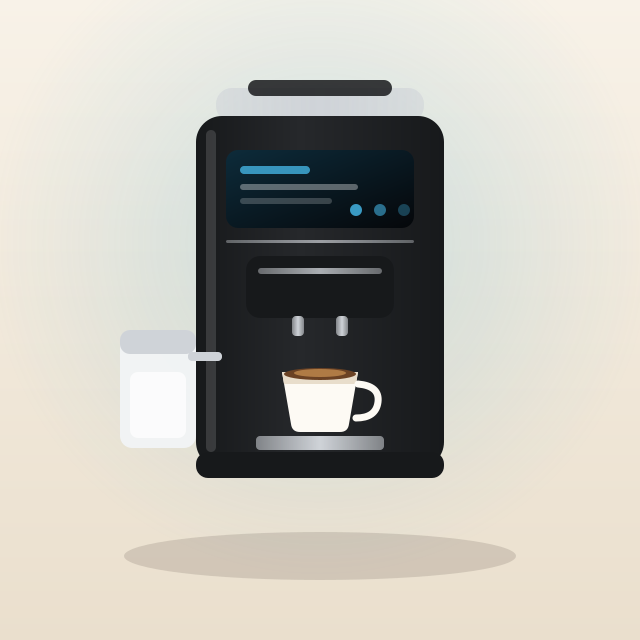
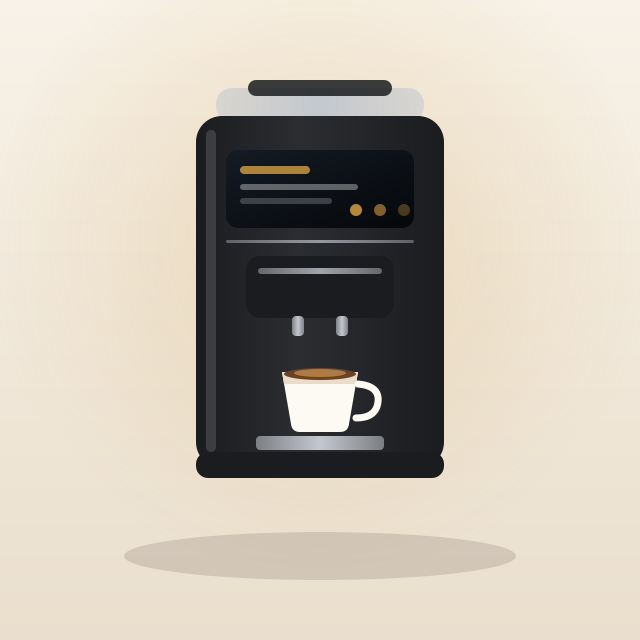

Choosing a Superautomatic Espresso Machine for an Office
Shared kitchens break machines that households never trouble. Here is what changes when a dozen people use the same espresso machine.
An office machine has a different failure mode to a home machine. At home, one person owns the maintenance and does it. In an office, everyone assumes someone else will, and the machine dies of neglect rather than use.
That reframes the whole spec sheet. Capacity matters, but self-cleaning and idiot-proofing matter more.
The milk system will decide whether the machine survives
A milk system with tubes needs flushing after every session. In a shared kitchen that does not happen, and within weeks the machine smells. Prioritise systems that are either fully self-cleaning in a closed loop, or so simple to rinse that a colleague will do it without being asked. The Philips LatteGo carafe — two pieces, no tubes, fifteen seconds at the tap — is the clearest example of the second approach. Jura's closed-loop cleaning container is the first.
User profiles stop the settings war
Without profiles, every strong-coffee drinker re-dials the machine and every weak-coffee drinker re-dials it back. Four or more profiles plus a guest slot is the practical minimum for a team. It is the single most underrated office spec.
Capacity: hopper and tank, not just cups per hour
A 250 g hopper is roughly twenty-five to thirty drinks. A 1.8 L tank is around twenty. For a team of eight to ten, expect to refill both daily — that is fine, if somebody owns it. For anything larger you are looking past this class of machine and into plumbed commercial units.
Noise in an open-plan office
Fifteen seconds at 79 dBA next to a desk is a genuine problem that nobody thinks about at purchase time. If the kitchen is not a separate room, weight the noise figures heavily and consider putting the machine as far from desks as the plumbing allows.
Our picks
Chosen from the machines currently in our database. Each links to the full specification breakdown.

Philips 5500 Series LatteGo EP5544/94
Twenty presets, four profiles plus a guest slot, and a milk carafe a colleague will actually rinse because it takes ten seconds. SilentBrew addresses the one real complaint about its predecessor.

Philips 5400 Series LatteGo EP5447/94
The same profiles and the same tube-free carafe for less money, if you can live with a shorter drinks menu and the loudest grinder in this catalogue.

Jura WE8 Professional Coffee Machine
Three litres of water, half a kilo of beans and a 25-serving grounds container. Rated for around 30 specialty cups a day, which is the only reason to pay this much.
Common questions
How many people can one superautomatic machine serve?
Realistically eight to twelve in an office, assuming two drinks each per day and someone refilling beans and water daily. Above that, look at plumbed commercial machines instead.
Who should own maintenance in an office?
One named person. Machines in shared kitchens fail from skipped descaling far more often than from wear, and 'everyone' owning it means nobody does.
Is a milk carafe or a milk fridge better for an office?
A carafe you can rinse in seconds beats a more capable system nobody cleans. Hygiene compliance matters more than foam quality once more than three people share the machine.
How big does the water tank need to be for an office?
A 1.8-litre tank is roughly twenty drinks, so a team of eight will empty it before lunch. If nobody is reliably refilling it, step up to a machine built for the job — the Jura WE8 holds three litres and a 25-serving grounds container, and runs a full day untouched.